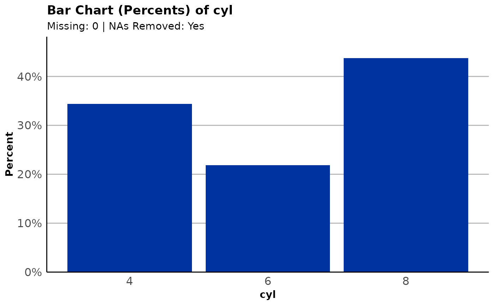
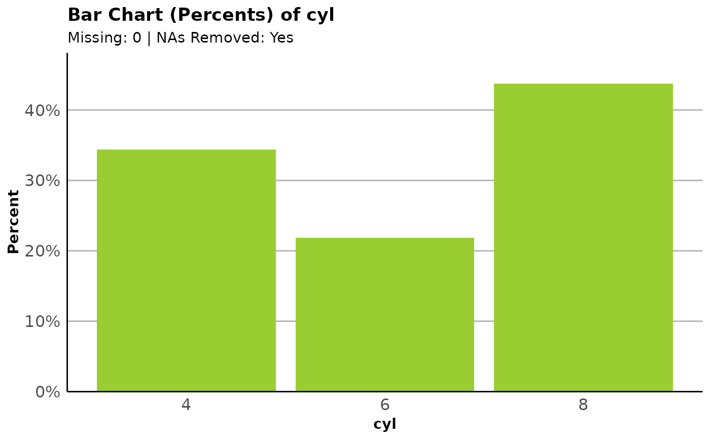
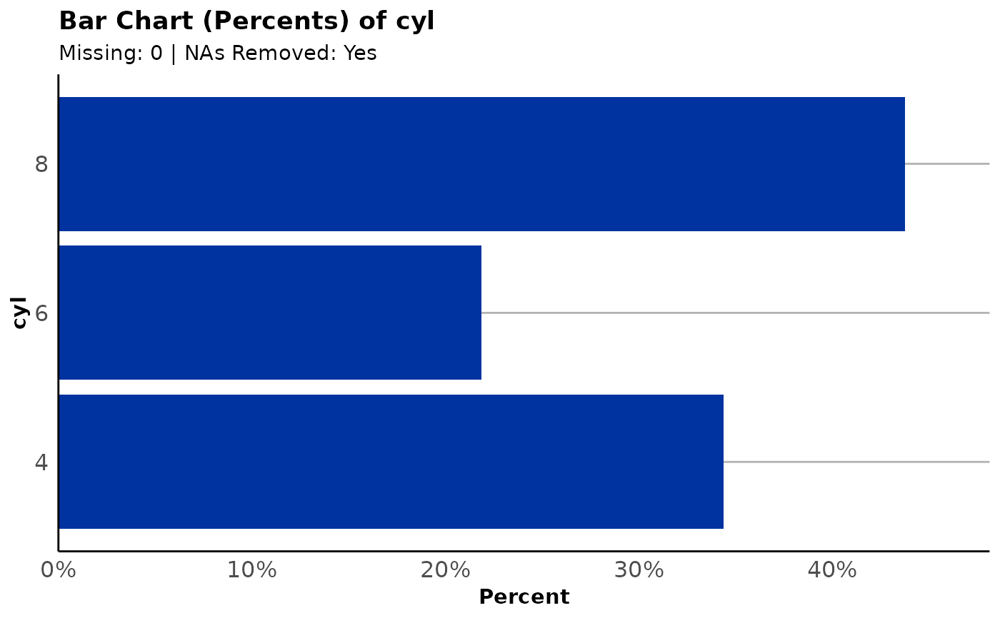
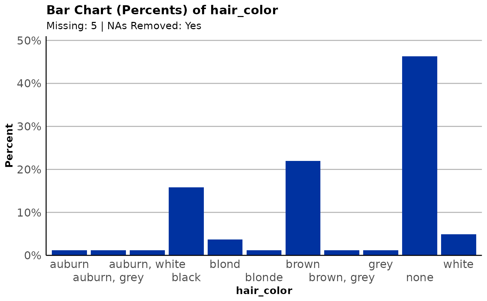
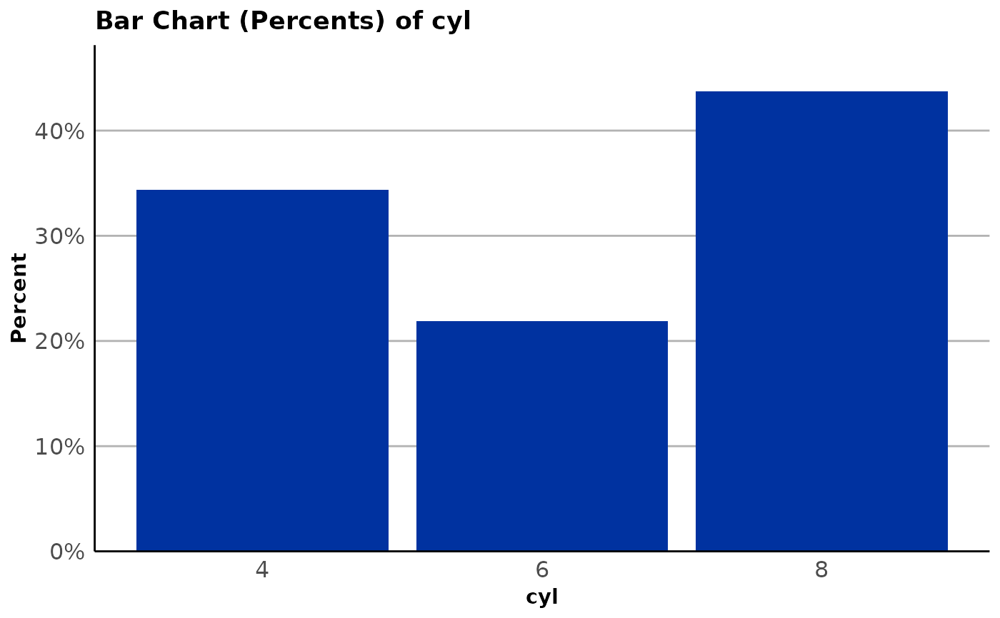
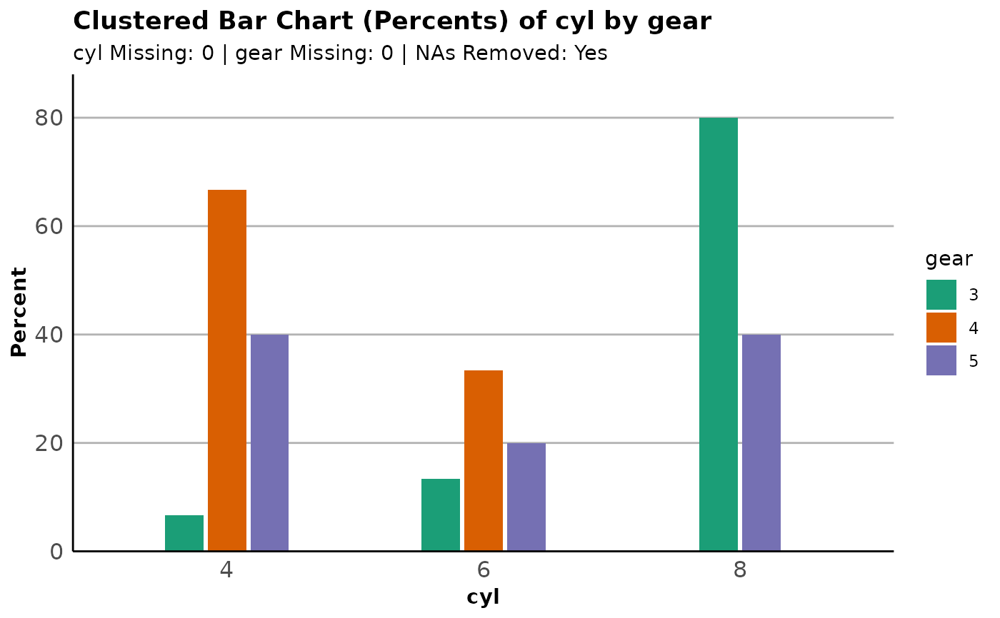
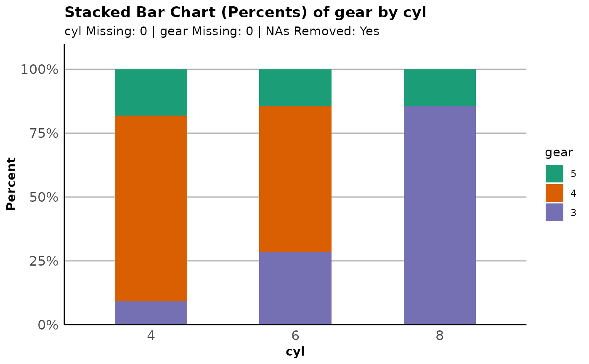

Create a simple bar plot
Arguments
- data
A data frame.
- formula
The variable to tabulate. Should be given in formula notation,
~var.- type
The type of plot to create. Valid options are "percent" (the default) or "count".
- fill
The fill of the plot. Valid options are a character color (for one variable plots) or a variable given in formula notation (
~var), used to create a grouped bar plot.- layout
The bar type for grouped plots. Either
"sbs"for side-by-side bars or"stack"for stacked bars.fillmust be a variable for this to go into effect.- orient
The orientation for the plot (either "vertical", the default, or "horizontal"). As a shortcut, "v" and "h" may be used.
- dodge
The number of rows to dodge the axis labels to, should they be overlapping.
- title
An override for the title of the plot. A sensible default is provided.
- subtitle
A switch for hiding the default subtitle. One of "show" or "hide".
- na_rm
Should missing values be removed? Defaults to TRUE.
- ...
Extra title arguments passed on to
ggformula::gf_labs()(which feeds toggplot2::ggplot()).
Examples
plot_bar(mtcars, ~cyl)

plot_bar(mtcars, ~cyl, type = "count")
plot_bar(mtcars, ~cyl, type = "percent", fill = "yellowgreen")

plot_bar(mtcars, ~cyl, orient = "horizontal")

plot_bar(dplyr::starwars, ~hair_color, dodge = 2)

plot_bar(mtcars, ~cyl, subtitle = "hide")

plot_bar(mtcars, ~cyl, fill = ~gear)

plot_bar(mtcars, ~cyl, fill = ~gear, layout = "stack")

plot_bar(mtcars, ~cyl, type = "count", fill = ~gear)
plot_bar(mtcars, ~cyl, type = "count", fill = ~gear, layout = "stack")